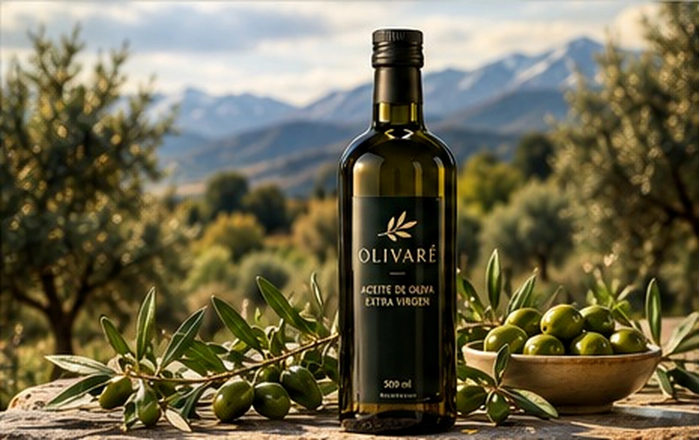

NUESTRO ORIGEN
Una finca donde
nace la calidad.
Olivares de San Juan, tierra y dedicación: el comienzo de cada producto OLIVARÉ.
Conocé nuestra esencia
NUESTRA ESENCIA
Creemos que los mejores sabores nacen del cuidado de cada detalle. Por eso, nuestra propuesta une la identidad de San Juan con una selección de productos pensados para disfrutar todos los días.
Conocé nuestra historiaSELECCIÓN OLIVARÉ
POR QUÉ ELEGIR OLIVARÉ
Inspirados en la tierra sanjuanina.
Una selección cuidada en cada detalle.
Sabores auténticos para tu mesa.
Detalles que se disfrutan y se regalan.
PARA COMPARTIR
Combinaciones pensadas para sorprender: aceites, aceitunas y conservas en presentaciones especiales, ideales para regalar.
Ver packs y regalos

NUESTRA ESENCIA
Desde San Juan, llevamos el sabor de nuestra tierra a tu mesa.
Conocé más